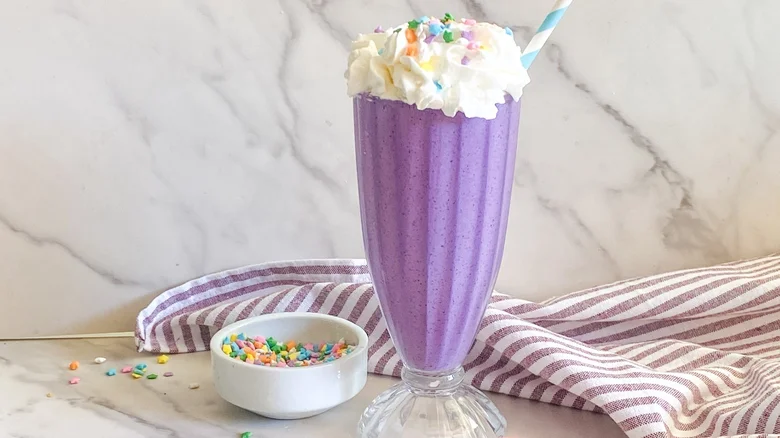

Grimace shake
Home

Description
If you've been scrolling on TikTok these past few weeks, you might have heard "Happy Birthday Grimace,"
as creators go wild faking comically horrific consequences after sipping on the new limited edition purple
milkshake. McDonald's has rolled out plenty of characters over the years, and Grimace is the latest one to
take the spotlight, with people flocking far and wide to get their hands on the now-iconic purple shake.
Ingredients
- 3 scoops vanilla ice cream
- 1 cup frozen blueberries
- 1/2 cup fresh raspberries, washed
- 1/2 cup milk
- 1/2 teaspoon blue spirulina
Steps
- Let the ice cream sit out for a couple of minutes to soften up, which will make it easier to scoop.
- Add the blueberries, raspberries, ice cream, milk, and blue spirulina to a blender.
- Blend until the fruit has broken down.
- Pour milkshake into a large glass or two small ones.
- Top with whipped cream and sprinkles. Add straws and enjoy.